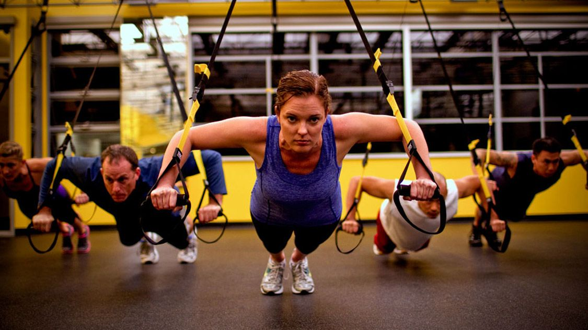

<div class="event-info">
 <div>
 <p>TRX یا Total Body Resistance Exercise عبارت است از یک بند چتر بازی و دو دسته که هیچ گونه کشی در آن بکار نرفته و بسیار محکم و مقاوم می باشد و فرد با آویزان شدن از آن و با وزن بدن خود, می تواند هرگونه حرکات و تمرینات کامل آمادگی جسمانی را بدون خطر انجام دهد.</p>
 
 <p>TRX از ورزشهای رو به توسعه ای میباشد که در ده های اخیر و از سال 1990 به دنیا معرفی شده است. در این ورزش افراد با استفاده از بندهایی که به یک سقف یا دیوار بسته شده است تمریناتی را که بر پایه وزن بدن و گاها تعادل میباشد اجرا میکنند. این تمرینات باعث میشوند تا بدن در شرایط مصرف انرژی بیشتری در مقایسه با بسیاری از رشته های دیگر ورزشی گردد. بهبود استقامت عضلات یکی از نکات مثبت در این سیستم تمرینی میباشد. ضمن اینکه عضلات کور نیز به صورت مناسبی میتوانند تقویت شوند.</p>
 </div>
</div>